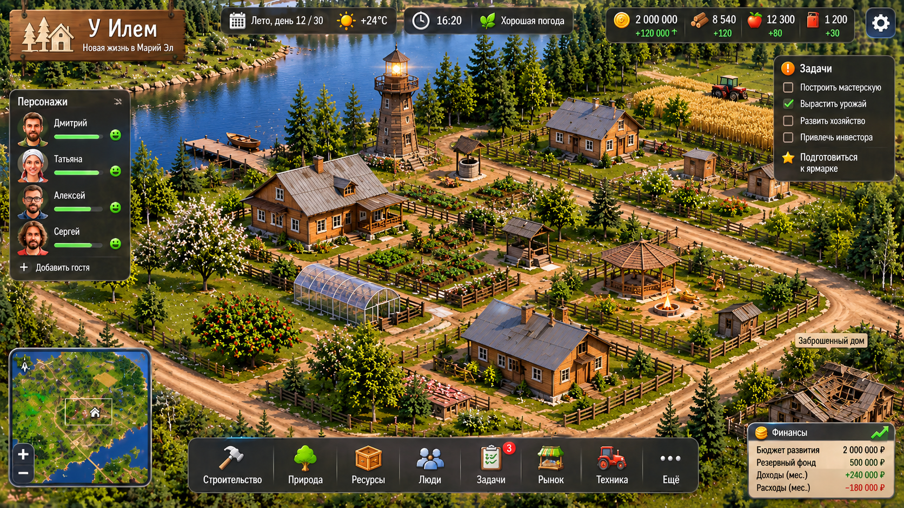

У Илем
3.3
Живая усадьба · новая жизнь места, людей и сада
⚙ Стартовая инвентаризация
Сохранить
Сохранения / новая игра
Экспорт
Импорт
Территория усадьбы
🏡 Объёмные постройки
🌤 Переменная облачность · 16°C

Загрузка объёмной усадьбы…
Родительский дом
Гостевой дом
Дом №2
Баня
−
＋
Общий вид
← Карта
Перетаскивание: поворот · колёсико: масштаб · касание: управление
🏡 Родительский дом
🏠 Гостевой дом
♨ Баня
🏡 Дом №2
🌳 Сад и огород
💧 Колодец
🌊 Озеро
Обзор
Строительство
Склад
Люди
Сад и огород
Проекты
Гости и события
Финансы
Хроника
💬 Командный чат
Поручения обычным языком. Ответы команды превращаются в черновики задач.
Отправить
☑ Общая доска задач
Плановые трудозатраты динамические. Ничего не выполняется без подтверждения.
Состояние сообщества
Последние события